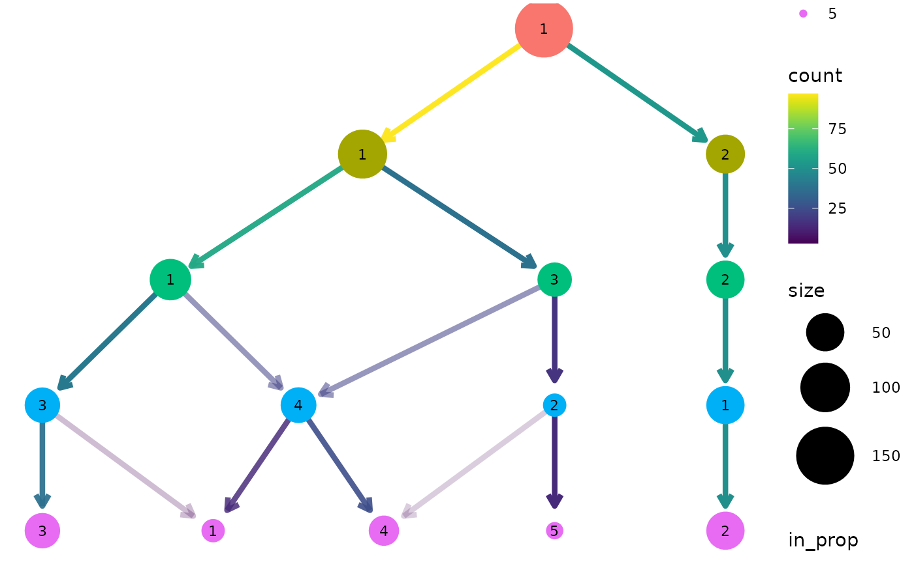

Creates a plot of a clustering tree showing the relationship between clusterings at different resolutions.
Usage
clustree(x, ...)
# S3 method for matrix
clustree(
x,
prefix,
suffix = NULL,
metadata = NULL,
count_filter = 0,
prop_filter = 0.1,
layout = c("tree", "sugiyama"),
use_core_edges = TRUE,
highlight_core = FALSE,
node_colour = prefix,
node_colour_aggr = NULL,
node_size = "size",
node_size_aggr = NULL,
node_size_range = c(4, 15),
node_alpha = 1,
node_alpha_aggr = NULL,
node_text_size = 3,
scale_node_text = FALSE,
node_text_colour = "black",
node_text_angle = 0,
node_label = NULL,
node_label_aggr = NULL,
node_label_size = 3,
node_label_nudge = -0.2,
edge_width = 1.5,
edge_arrow = TRUE,
edge_arrow_ends = c("last", "first", "both"),
show_axis = FALSE,
return = c("plot", "graph", "layout"),
...
)
# S3 method for data.frame
clustree(x, prefix, ...)
# S3 method for SingleCellExperiment
clustree(x, prefix, exprs = "counts", ...)
# S3 method for seurat
clustree(x, prefix = "res.", exprs = c("data", "raw.data", "scale.data"), ...)
# S3 method for Seurat
clustree(
x,
prefix = paste0(assay, "_snn_res."),
exprs = c("data", "counts", "scale.data"),
assay = NULL,
...
)Arguments
- x
object containing clustering data
- ...
extra parameters passed to other methods
- prefix
string indicating columns containing clustering information
- suffix
string at the end of column names containing clustering information
- metadata
data.frame containing metadata on each sample that can be used as node aesthetics
- count_filter
count threshold for filtering edges in the clustering graph
- prop_filter
in proportion threshold for filtering edges in the clustering graph
- layout
string specifying the "tree" or "sugiyama" layout, see
igraph::layout_as_tree()andigraph::layout_with_sugiyama()for details- use_core_edges
logical, whether to only use core tree (edges with maximum in proportion for a node) when creating the graph layout, all (unfiltered) edges will still be displayed
- highlight_core
logical, whether to increase the edge width of the core network to make it easier to see
- node_colour
either a value indicating a colour to use for all nodes or the name of a metadata column to colour nodes by
- node_colour_aggr
if
node_colouris a column name than a string giving the name of a function to aggregate that column for samples in each cluster- node_size
either a numeric value giving the size of all nodes or the name of a metadata column to use for node sizes
- node_size_aggr
if
node_sizeis a column name than a string giving the name of a function to aggregate that column for samples in each cluster- node_size_range
numeric vector of length two giving the maximum and minimum point size for plotting nodes
- node_alpha
either a numeric value giving the alpha of all nodes or the name of a metadata column to use for node transparency
- node_alpha_aggr
if
node_aggris a column name than a string giving the name of a function to aggregate that column for samples in each cluster- node_text_size
numeric value giving the size of node text if
scale_node_textisFALSE- scale_node_text
logical indicating whether to scale node text along with the node size
- node_text_colour
colour value for node text (and label)
- node_text_angle
the rotation of the node text
- node_label
additional label to add to nodes
- node_label_aggr
if
node_labelis a column name than a string giving the name of a function to aggregate that column for samples in each cluster- node_label_size
numeric value giving the size of node label text
- node_label_nudge
numeric value giving nudge in y direction for node labels
- edge_width
numeric value giving the width of plotted edges
- edge_arrow
logical indicating whether to add an arrow to edges
- edge_arrow_ends
string indicating which ends of the line to draw arrow heads if
edge_arrowisTRUE, one of "last", "first", or "both"- show_axis
whether to show resolution axis
- return
string specifying what to return, either "plot" (a
ggplotobject), "graph" (atbl_graphobject) or "layout" (aggraphlayout object)- exprs
source of gene expression information to use as node aesthetics, for
SingleCellExperimentobjects it must be a name inassayNames(x), for aseuratobject it must be one ofdata,raw.dataorscale.dataand for aSeuratobject it must be one ofdata,countsorscale.data- assay
name of assay to pull expression and clustering data from for
Seuratobjects
Value
a ggplot object (default), a tbl_graph object or a ggraph
layout object depending on the value of return
Details
Data sources
Plotting a clustering tree requires information about which cluster each
sample has been assigned to at different resolutions. This information can
be supplied in various forms, as a matrix, data.frame or more specialised
object. In all cases the object provided must contain numeric columns with
the naming structure PXS where P is a prefix indicating that the column
contains clustering information, X is a numeric value indicating the
clustering resolution and S is any additional suffix to be removed. For
SingleCellExperiment objects this information must be in the colData slot
and for Seurat objects it must be in the meta.data slot. For all objects
except matrices any additional columns can be used as aesthetics, for
matrices an additional metadata data.frame can be supplied if required.
Filtering
Edges in the graph can be filtered by adjusting the count_filter and
prop_filter parameters. The count_filter removes any edges that represent
less than that number of samples, while the prop_filter removes edges that
represent less than that proportion of cells in the node it points towards.
Node aesthetics
The aesthetics of the plotted nodes can be controlled in various ways. By
default the colour indicates the clustering resolution, the size indicates
the number of samples in that cluster and the transparency is set to 100%.
Each of these can be set to a specific value or linked to a supplied metadata
column. For a SingleCellExperiment or Seurat object the names of genes
can also be used. If a metadata column is used than an aggregation function
must also be supplied to combine the samples in each cluster. This function
must take a vector of values and return a single value.
Layout
The clustering tree can be displayed using either the Reingold-Tilford tree
layout algorithm or the Sugiyama layout algorithm for layered directed
acyclic graphs. These layouts were selected as the are the algorithms
available in the igraph package designed for trees. The Reingold-Tilford
algorithm places children below their parents while the Sugiyama places
nodes in layers while trying to minimise the number of crossing edges. See
igraph::layout_as_tree() and igraph::layout_with_sugiyama() for more
details. When use_core_edges is TRUE (default) only the core tree of the
maximum in proportion edges for each node are used for constructing the
layout. This can often lead to more attractive layouts where the core tree is
more visible.
Examples
data(nba_clusts)
clustree(nba_clusts, prefix = "K")
